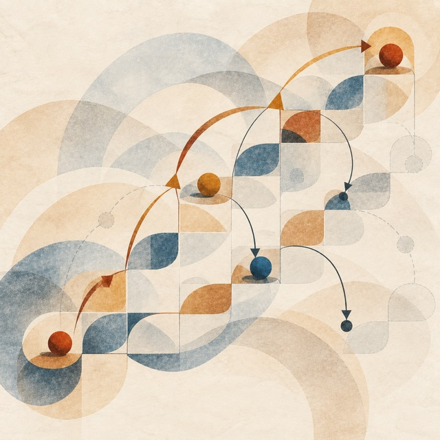

Session 5
Functions as Values: Iterators and Streams
Iterators, thunks and streams: two uses of a function passed as a value.
Session 5
Iterators, thunks and streams: two uses of a function passed as a value.

Session 5 is about functions passed as values, and how a program uses them to control, step by step, a traversal of its data and its own computation:
| 1 | Iterators: who drives the traversal?
Closures and what they capture; map, filter and length
written with a fold; internal iteration (the list calls our function) and how to stop it
before the last element; external iteration (we ask for the next element); an iterator
written by hand in Java and in OCaml; a generator in JavaScript, and the object that the
compiler makes of it. |
| 2 | Thunks and streams: when is a value computed? A thunk is a function that holds a computation not yet run. With thunks we choose when a value is computed; with sequences (streams), how far a list is computed, and it can be without end; with memoisation, that a value is computed at most once. Each time we make the choice ourselves in OCaml, then look at Haskell, where the language makes it. An appendix to read at home is on memoising a function. |
A third block, on continuations, was announced for this session and was not given: it will be covered in session 6. Part C of the quest goes with it.
The examples of the lecture are on lists and sequences. In the quest we write a mini text editor on a rope, the tree structure in which text editors store a document.
Each part of the lecture asks one question. The two conclusions answer them.
| The question | The answer |
|---|---|
| What does a function value carry? | Its code and its environment: a closure. |
| How do we visit every element of a list? | We pass a function to a fold: internal iteration. |
| Can our function stop the traversal? | By its answer, only with fold_until: Continue or Stop. |
| How can the consumer choose the next step? | It calls next: external iteration. |
| How can the producer remember where it stopped? | With yield: a generator, which the language suspends. |
| The question | The program decides, in OCaml | The language decides, in Haskell |
|---|---|---|
| When is a value computed? | When we call the thunk that holds it. | When it is used. |
| How far is a sequence computed? | As far as we ask: a sequence. | Every list is a sequence. |
| How many times? | Once, if we keep the result: lazy. | Once: every value is lazy, by default. |
In block 2 the function has type unit -> 'a: we call it to get a value. In
session 6 a function holds the rest of the computation, 'a -> 'r: we call it to
give a value.
Session 3 introduced algebraic data types on the melody: a closed list of shapes, each value
built in exactly one way, taken apart by match, with the compiler telling us when
a case is missing. In session 5 we wrote more of them, each a few lines long. They add three things
to the melody:
'a: one type for a rope of characters, a sequence of lines, a history of ropes;'b go (block 1, lab A3)type 'b go = Continue of 'b | Stop of 'b let rec fold_until f acc = function | [] -> acc | x :: xs -> match f acc x with | Stop a -> a | Continue a -> fold_until f a xs
The function we hand to fold_until answers with the accumulator in both cases;
the constructor says what the fold does next. After Stop, the rest of the list is
not visited. On the rope, in the lab, fold_until itself returns a 'b go,
so that the left subtree can tell the right one that it stopped.
type 'a list = [] | (::) of 'a * 'a list type 'a node = Nil | Cons of 'a * 'a seq and 'a seq = unit -> 'a node (* a sequence: the rest is a thunk *) type 'a node = Nil | Cons of 'a * 'a seq and 'a seq = 'a node Lazy.t (* the rest is a lazy value *)
| The rest has type | It is | It is computed |
|---|---|---|
'a list | a value | before we read the first element |
unit -> 'a node | a thunk | each time we call it |
'a node Lazy.t | a lazy value | the first time we force it, then kept |
The shape is the same in the three: an empty case, and a case with one element and the rest.
Only the type of the rest changes, and with it when the rest is computed. To compute the first
25 Fibonacci numbers, fibs makes 196 392 additions when the rest is a thunk,
and 23 when it is a lazy value. The second declaration is recursive through a function type:
node and seq are defined together, with and.
'a state (block 2)type 'a state = | Delayed of (unit -> 'a) | Value of 'a let delay f = ref (Delayed f) let force s = match !s with | Value v -> v | Delayed f -> let v = f () in s := Value v; v
The two constructors are the two moments of a lazy value: before it is computed it holds a
thunk, afterwards the value. force replaces the first by the second in the
reference, so the thunk runs at most once. OCaml’s lazy does the same
inside the language.
'a rope and 'a historytype 'a rope = | Leaf of 'a | Cat of 'a rope * 'a rope type 'a history = { past : 'a list; (* the versions before the present one, the latest first *) present : 'a; future : 'a list; (* the versions undone, the next one to redo first *) }
A rope is a leaf, or two ropes put one after the other. The type has no constructor for an
empty rope, so every rope has at least one leaf, and no function on ropes has an empty case to
handle. A history is a record: a product, which holds its three fields at once, where a sum
holds one constructor out of several. A version of the document is the root of a rope, so
undo and redo move roots from one list to the other and copy no
text.
'a optionIn the lab, find_first returns None when no leaf satisfies the
predicate. In the appendix, memo asks its table with
Hashtbl.find_opt and matches on Some y and None. The
type makes the caller say what happens when there is no value.
We wrote the types; the compiler found the types of the functions. How it finds them, and what a type with a parameter means, is session 11.
| W | Warm-up. Lists on paper, then Pascal’s triangle as a sequence at the keyboard. Its last part, lab 2’s queue with a lazy front, is the homework. |
| 0 | The rope, on paper and in the toplevel. Drawing ropes,
counting their nodes; count_notes on lab 3’s melody, read as a fold. |
| A | One step of a traversal (rope.ml).
fold; insert and delete; undo and redo; fold_until;
the rope as a sequence, and same, which compares two sequences element by element. |
| B | A computation not yet run (stream.ml).
take, map, filter, take_while on sequences;
the lines of a document; grep. |
| C | The rest of the computation (next.ml).
Goes with session 6, on continuations: we do it after that lecture. |
Nothing is handed in; the checks, dune exec ./main.exe, say which levels remain.
'a seq, and the library’s
Seq. Leroy, Control structures in programming languages (2026),
chapters 6 and 7.warmup/queue.ml. A check counts
the reversals when one version is popped twice.memo,
memo_rec, and the two exercises on its last slide.| Language | Role |
|---|---|
| OCaml | read in both blocks, write in the lab — the first types with a parameter that we write ourselves |
| Java | read two traversals of a list, an iterator written by hand |
| JavaScript | read closures made in a loop, a generator and the object the compiler makes of it |
| Haskell | read lists without end: the natural numbers, the primes, the Fibonacci numbers |
None of this is required.
map, filter and the two folds, in the OCaml of the lab.next and for…of, and function*.delay and force in Scheme, and the same memoisation as our
'a state.lazy.match.Seq and
Lazy. The types of
block 2, as the language ships them.